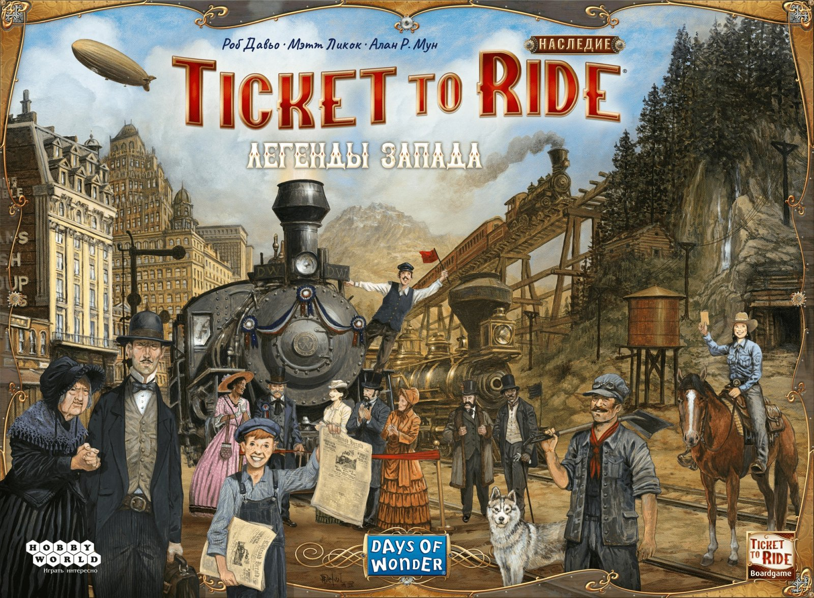

Ticket to Ride (Билет на поезд)
Тип: семейная стратегия, евро-игра, сбор сетов
Игроков: 2–5 человек
Время партии: 30–60 минут
Возраст: от 8 лет
Сложность: низкая (правила объясняются за 5–10 минут)
Состав комплекта
В коробке находится всё необходимое для игры (базовая версия «Америка»):
- 1 игровое поле с картой Северной Америки;
- 240 пластиковых вагончиков (по 45 штук пяти цветов + запасные);
- 110 карт поездов (8 цветов + локомотивы);
- 30 карт маршрутов (билеты, которые нужно выполнить);
- 5 фишек для подсчёта очков;
- 1 бонусная карта «Самый длинный путь»;
- правила игры.
Правила и механика
Цель игры — набрать наибольшее количество победных очков, выполняя карты маршрутов и строя железные дороги между городами.
- Взять карты поездов. Игрок берёт 2 карты из колоды или из открытого ряда (или 1 карту, если она — локомотив). Карты поездов нужны для строительства путей.
- Построить путь. Игрок сбрасывает карты поездов, чтобы занять участок пути между двумя соседними городами на карте. Цвет карт должен совпадать с цветом пути. За каждый построенный вагончик игрок сразу получает очки (от 1 до 15 в зависимости от длины пути).
- Взять новые маршруты. Игрок берёт 3 новые карты маршрутов и должен оставить себе как минимум одну.
Ключевые элементы
- Локомотивы: Карты-джокеры, которые могут заменить вагончик любого цвета.
- Маршруты (билеты): В начале игры каждый получает несколько карт маршрутов, где указаны два города. Если игрок соединит их непрерывным путём своего цвета к концу игры, он получит бонусные очки. Если не соединит — потеряет эти очки.
- Бонус за самый длинный путь: Игрок с самым длинным непрерывным маршрутом в конце игры получает +10 очков.
Конец игры
Игра заканчивается, когда у одного из игроков остаётся 2 или меньше вагончиков. После этого все игроки делают последний ход, и проводится финальный подсчёт очков: за построенные пути, за выполненные маршруты и за бонус «Самый длинный путь».